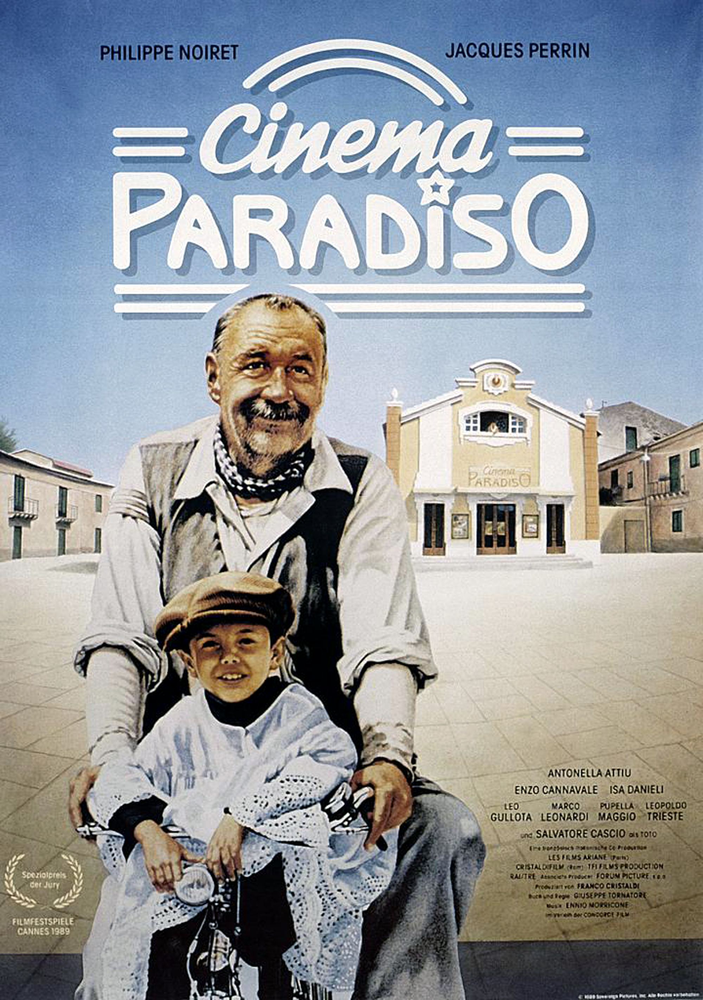
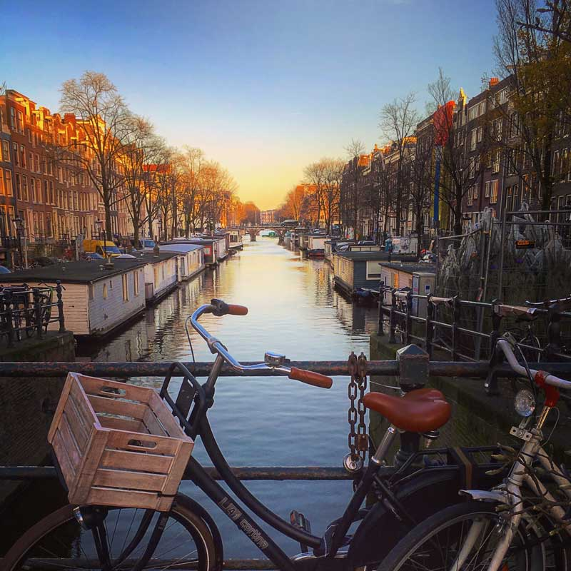

Carolina Lemos
Student @ Le Wagon Coding Bootcamp
I come from a business background and have been working in strategic consulting in the retail industry for the past 3 years. I joined Le Wagon to learn how to code and develop cool products and combine it with my management background
Get in touchMy favorite movies
|  |
Cinema ParadisoA filmmaker recalls his childhood when falling in love with the pictures at the cinema of his home village and forms a deep friendship with the cinema's projectionist. |
 |
Le fabuleux destin d'Amélie PoulainAmélie is an innocent and naive girl in Paris with her own sense of justice. She decides to help those around her and, along the way, discovers love. |
 |
IntouchablesAfter he becomes a quadriplegic from a paragliding accident, an aristocrat hires a young man from the projects to be his caregiver. |
My favorite cities
LisbonLisbon is the stunning capital city of Portugal, and is one of the most charismatic and vibrant cities of Europe. It is a city that effortlessly blends traditional heritage, with striking modernism and progressive thinking. |
|
|  |
AmsterdamGolden Age canals lined by tilting gabled buildings are the backdrop for Amsterdam's treasure-packed museums, vintage-filled shops and hyper-creative design, drinking and dining scenes. |
LondonLondon is as much about wide-open vistas and leafy landscape escapes as it is high-density, sight-packed urban exploration. Central London is where the major museums, galleries and most iconic sights congregate, but visit Hampstead Heath or the Queen Elizabeth Olympic Park to flee the crowds and frolic in wide open green expanses. |
About this page
This page has been coded during the FullStack program @LeWagon. That was probably the best experience of my entire life.